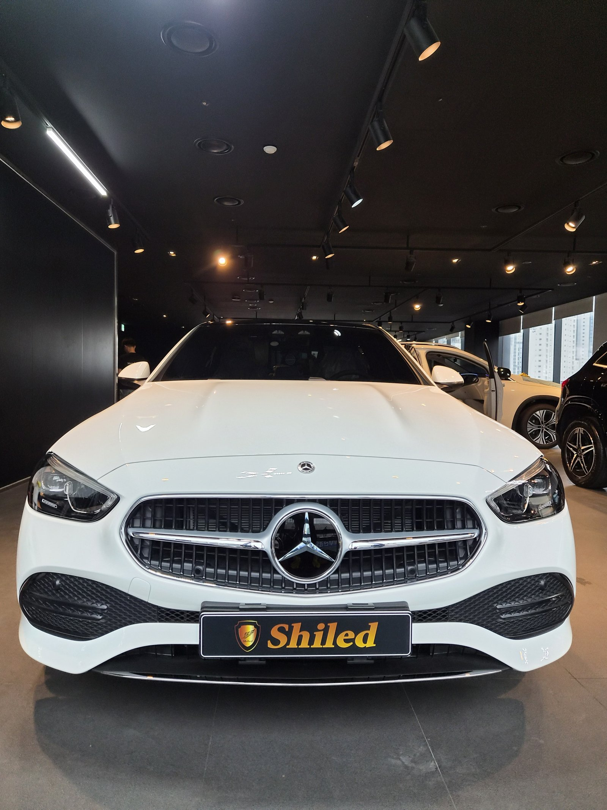
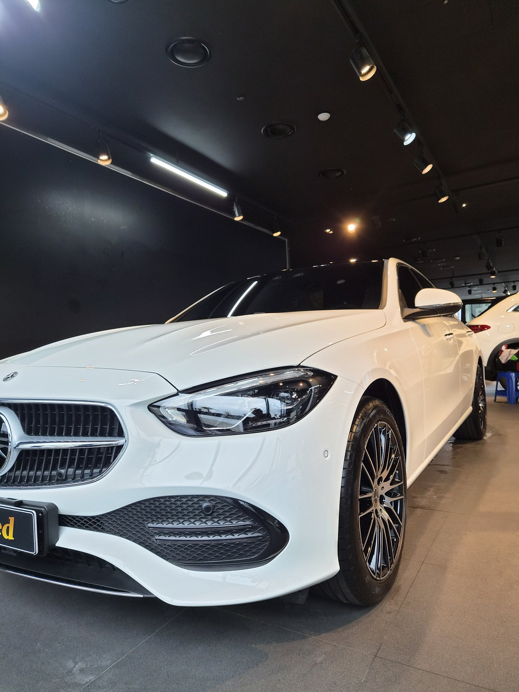
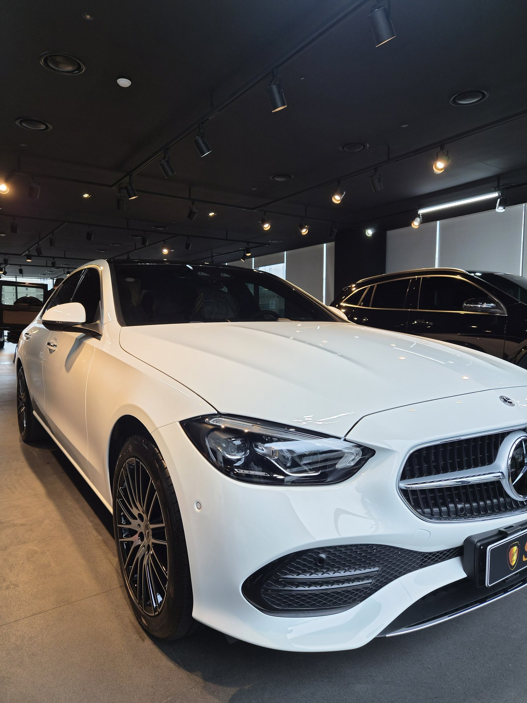
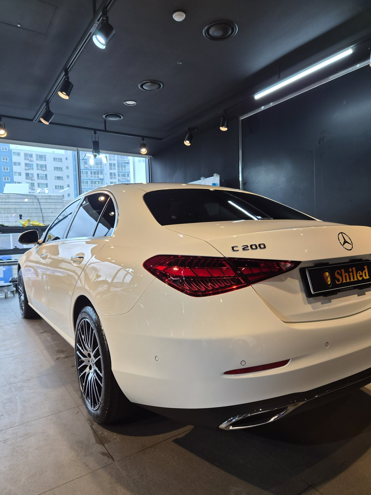
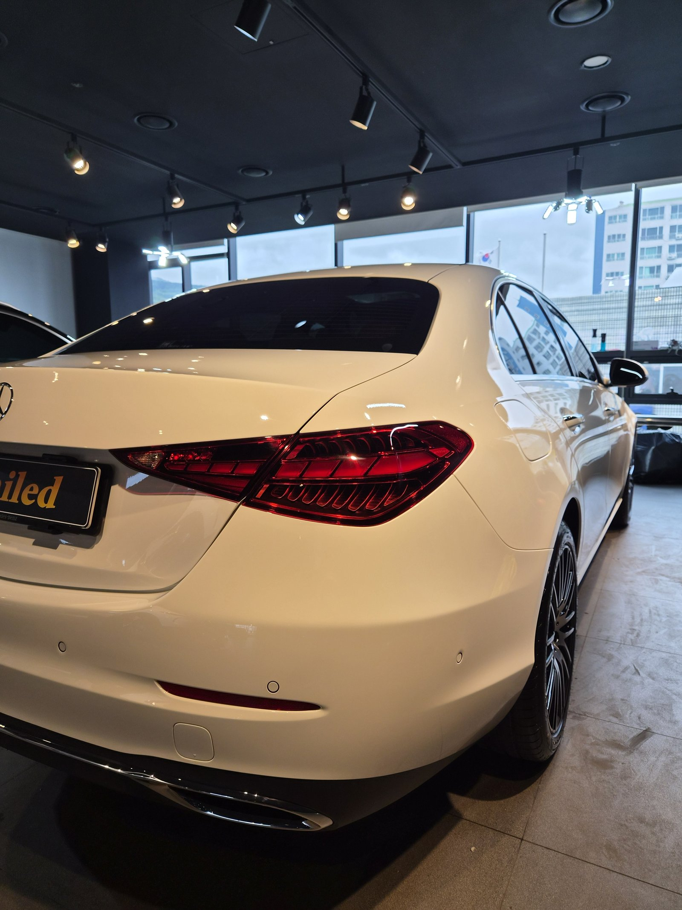
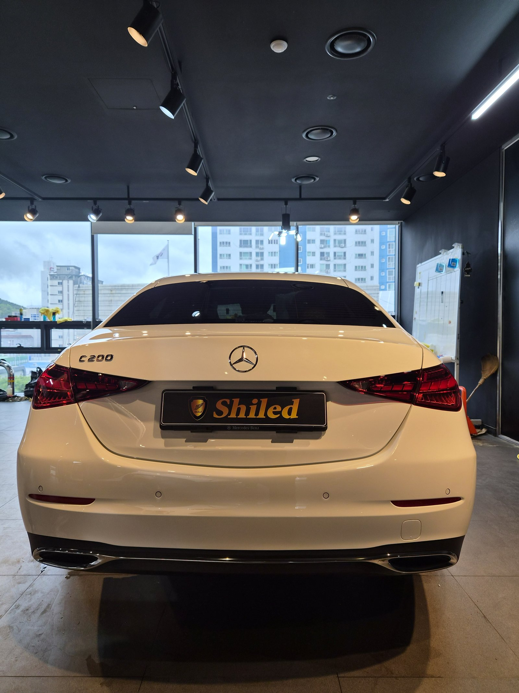
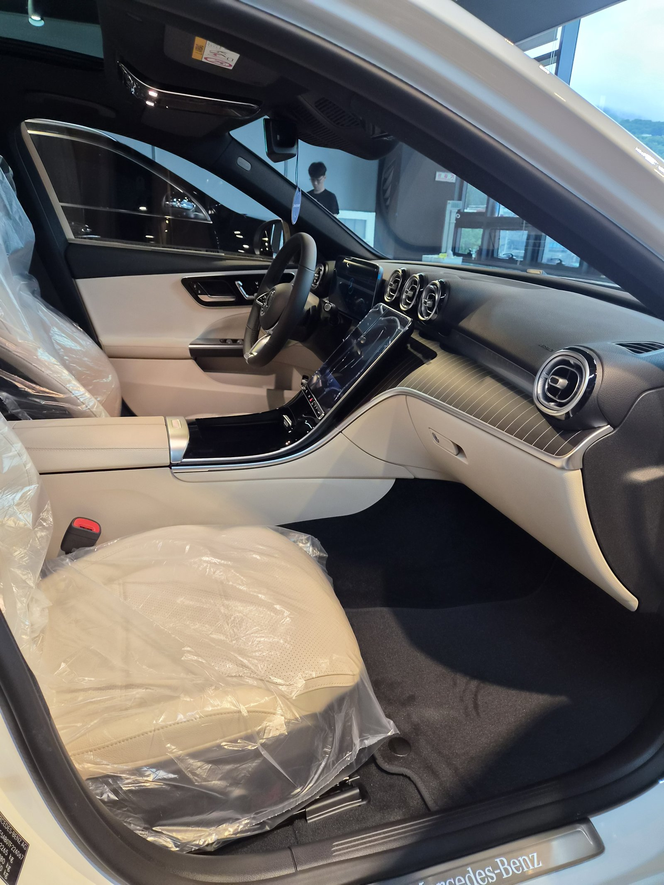

벤츠 C200 백색입니다. 아직 출고 전, 새 차입니다.
이 차는 출고 전에 F5 유리막코팅으로 진행했습니다.
부산 유리막코팅을 문의하실 때 가장 많이 여쭤보시는 게 타이밍입니다. 이 차는 그 타이밍을 놓치지 않은 경우입니다.

새 차인데 왜 출고 전에 코팅을 하나
도장면이 가장 깨끗할 때 올리는 코팅이 가장 오래갑니다.
출고 후에는 운행과 세차로 미세한 잔기스와 오염이 쌓이기 시작합니다. 그게 쌓이기 전, 신차 상태 그대로일 때 코팅막을 입혀두는 겁니다. 그래서 쉴드광택은 출고 전 신차 시공을 맡아 진행합니다.
백색 차량은 특히 그렇습니다. 시간이 지나면 미세한 워터스팟과 잔기스가 눈에 잘 띄기 시작합니다. 출고 전 코팅으로 그 시작점을 최대한 늦추는 게 관건입니다.

백색 신차에 왜 F5인가
F5는 색감 깊이를 끌어올려 글로시함을 극대화하는 코팅입니다.
검정처럼 눈에 띄는 발색은 아니지만, 백색도 얼마나 맑고 입체감 있게 빛을 반사하느냐가 관건입니다. 여기에 F5를 올리면 도장면 위로 조명이 또렷하게 맺히면서, 같은 백색이라도 더 맑고 깊이 있게 보입니다. 코팅제는 대표가 화학공학 전공으로 직접 개발·제조한 제품입니다.

기술자의 팁
신차라고 바로 코팅을 올리지 않습니다. 운송·보관 중 묻은 미세 오염을 디테일링 세차와 탈지로 걷어낸 뒤에 올립니다. 깨끗한 바탕 위에 올려야 코팅이 제대로 밀착합니다. 백색은 오염이 남아있으면 코팅 후에도 얼룩처럼 도드라져 보이기 때문에 전처리를 더 꼼꼼히 봅니다.

흰색 도장면, 리플렉션으로 확인합니다
백색은 광택 상태가 눈으로 잘 안 잡힌다는 오해가 있습니다.
실제로는 조명 아래서 반사되는 선의 선명도로 확인하면 됩니다. F5 코팅을 마친 도장면은 조명 라인이 왜곡 없이 매끈하게 떨어집니다. 뒤 범퍼와 테일램프 라인까지 고르게 광이 살아있는 걸 확인하실 수 있습니다.


외부만이 아니라 안까지
출고 전 차량은 안팎 컨디션을 함께 정리합니다.
실내는 아직 시트에 보호 커버가 씌워진 신차 그대로입니다. 외부 도장은 F5로 광을 잡고, 인도까지 깨끗한 상태로 관리합니다.

자주 묻는 질문
Q. 새 차인데 왜 출고 전에 코팅을 하나요?
A. 도장면이 가장 깨끗할 때 올리는 코팅이 가장 오래갑니다. 운행·세차로 잔기스와 오염이 쌓이기 전, 신차 상태 그대로일 때 코팅막을 입혀두면 처음 컨디션을 더 오래 지킵니다.
Q. 백색 신차에는 어떤 코팅이 좋나요?
A. 이 차는 F5로 진행했습니다. F5는 색감 깊이를 끌어올려 글로시함을 극대화합니다. 백색은 밋밋해 보이기 쉬운데, F5를 올리면 조명이 또렷하게 맺히면서 더 맑고 입체감 있게 보입니다.
Q. 유리막코팅과 광택은 뭐가 다른가요?
A. 광택은 기존 흠집을 갈아내 표면을 정리하는 작업이고, 유리막코팅은 그 위에 보호막을 올려 앞으로의 오염과 손상을 막는 작업입니다. 이 차는 출고 전 신차라 광택 없이 전처리 후 F5 코팅만 진행했습니다.
Q. 신차코팅도 전처리를 하나요?
A. 합니다. 신차라도 운송·보관 중 미세 오염이 묻습니다. 디테일링 세차와 탈지로 표면을 정리한 뒤 코팅을 올려야 제대로 밀착합니다.
Q. 유리막코팅, 쉴드광택 위치와 예약은 어떻게 하나요?
A. 부산 남구 유엔로220 1F 쉴드광택입니다. 예약·상담은 010-3384-1850, 대표 최한중이 직접 상담하고 책임 시공합니다.
새 차일수록 시작점이 다릅니다. 가장 깨끗할 때 입혀두십시오.
제품을 직접 만드는 사람이 직접 시공합니다.
유리막코팅을 고민 중이시면 편하게 연락 주십시오.
어떤 차를 타냐보다 어떻게 타냐가 중요합니다~!
시공 중에는 전화를 받지 못할 때가 많습니다.
카카오톡으로 차종과 원하시는 시공을 남겨주시면 확인 후 답변드립니다.
쉴드광택 · 부산 남구 유엔로220 1F · 대표 최한중